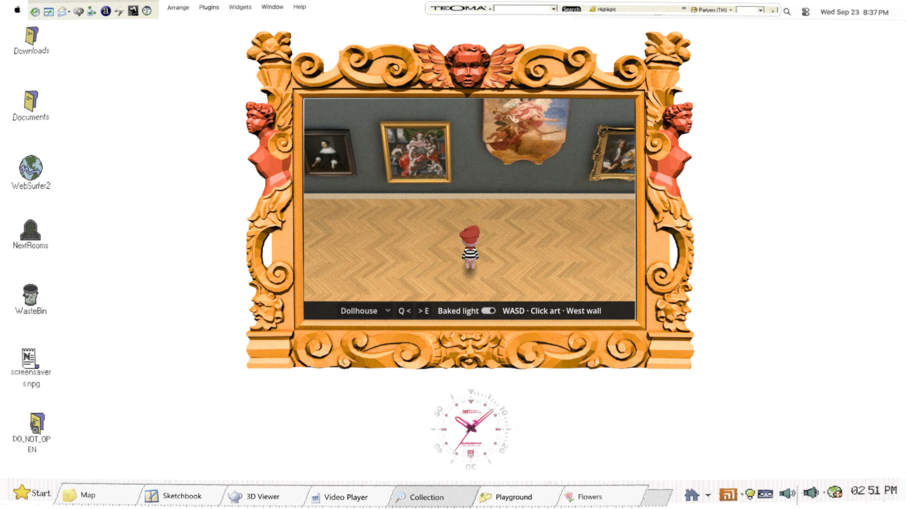
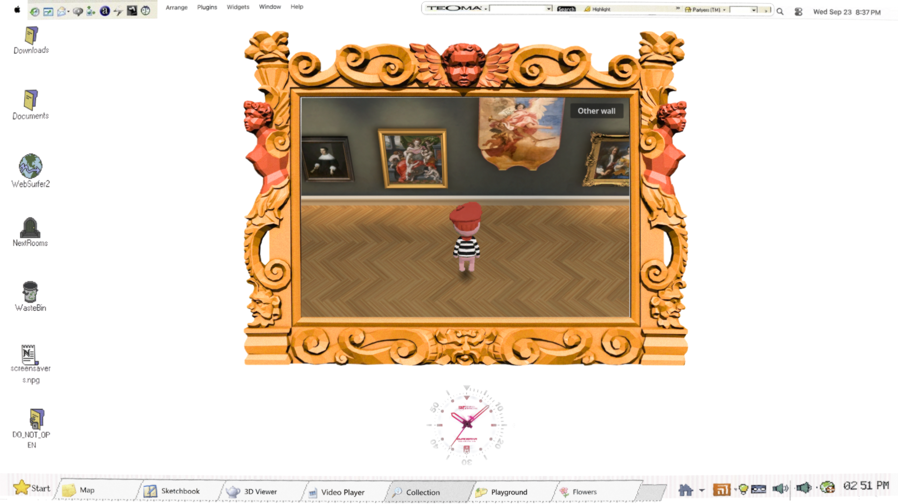
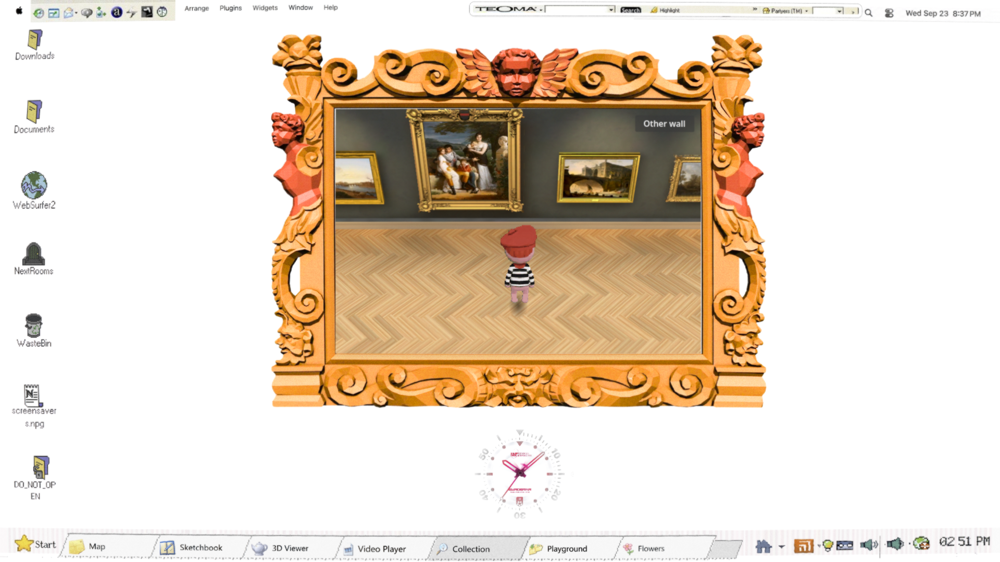
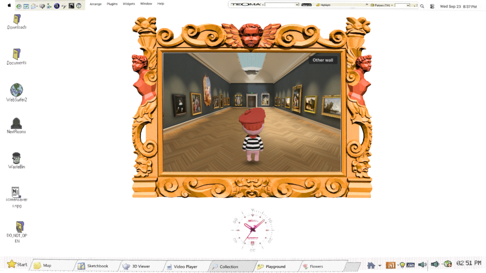

Working prototype f873b58 · 26 September 2026. Blind review: not an exact match. Character framing is close; room depth, floor grain and lighting shapes need further work.
Open dollhouse · Lower camera · Full room perspective
WASD or arrows to walk; Q/E turns the view. “Other wall” crosses to the opposite collection at the same point along the room. Click art to approach and open it. F6 exposes authoring comparisons.


| Measurement | Selected reference | Candidate |
|---|---|---|
| Character height within game view | ≈33% | ≈32% |
| Feet down the game view | ≈80% | ≈79% |
| Chrome median / p95 | prior build 16.7 /16.8 ms | 16.7 / ≤16.8 ms |


30 fps browser capture. This clip contains no audio. The runtime check measured seven step starts in two seconds and zero while blocked; it does not establish matching Nintendo timbre or exact audiovisual phase.
Composition research · Lighting research · Blind visual review · Browser measurements · Rendered checks
The reference images guide rendering and character framing. The museum layout and artwork placements are retained. Current character art is back-view-only; its samples are from Wild World, so directional motion and GameCube sound fidelity remain unresolved.